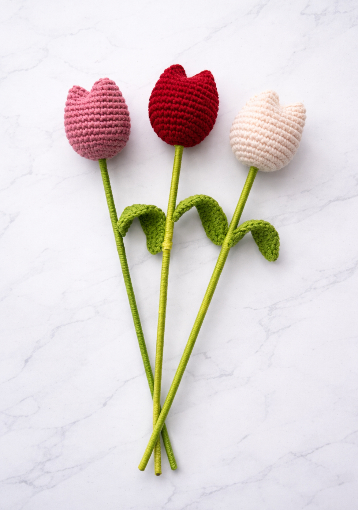
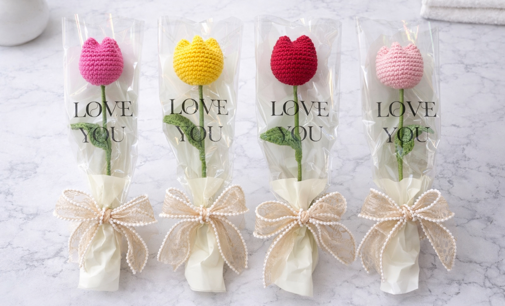

Tulipanes
Delicados, elegantes y eternos… nuestros tulipanes tejidos están hechos a mano con amor en cada puntada. A diferencia de las flores naturales, nunca se marchitan, convirtiéndose en un detalle perfecto que simboliza cariño, belleza y durabilidad, ideal para regalar o decorar cualquier espacio con un toque suave y especial.



